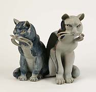
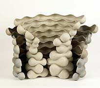
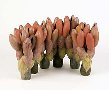
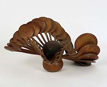
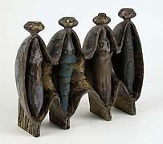

| Beate Kuhn
Pioneer German studio potter

Beate Kuhn is one of the most important German potters of our
age. As early 1982 KERAMION Museum staged a solo exhibition of her
works, and she has participated in a number of other exhibitions
there. On the occasion of her 80th birthday, the Stiftung
KERAMION is staging a retrospective of her work. More than 90
works from the complete oeuvre of 1,500 pieces will greet the visitor.
The collection is complemented by works from eight private and public
collections. The retrospective will be presented from 6th May 2007
until 5th August 2007 in the Museum in Frechen, Germany.
The works of Beate Kuhn are known in the whole world. Her awards
and honors are numerous. Beate Kuhn’s artistic work is characterized
by her pottery: the potter’s wheel is her base tool. The sheer
number of one-off pieces by the artist – more than 1,500,
all bear her unmistakable and fascinating personal touch.

Already during her studies at the Werkkunstschule in Darmstadt,
she designed elegant avant-garde vases and a jar for the Rosenthal
porcelain factory’s studio-line . These are 1950s’ classics.
Her first autonomous works are sculpted vessels, which reveal her
fascination with the oeuvre of Joan Miró and Paul Klee.
Throwing pots on the wheel was to determine her whole oeuvre. Already
in the 1950’s visitors to the International Expo in Frankfurt
were delighted by her intensively colored and painted works. This
is surprising, as painted vessels were not trendy at the time.

In 1957 Beate Kuhn moved to Düdelsheim and set up her own
workshop. The important German potters Karl and Ursula Scheid also
live in her neighborhood. This time coincided with a change in her
oeuvre. Since the early 1960’s Beate Kuhn has created freely
designed sculptures, each piece consisting of individual thrown
and cut elements, assembled into a whole. In each of her works,
the artist confines herself where possible to a single basic element
executed in different sizes, which are then all juxtaposed in serial
fashion. By taking this step, Beate Kuhn became one of the first
potters in Germany to abandon utilitarian work in favor of purely
artistic work.

The Stiftung KERAMION is exhibiting a survey of Kuhn's oeuvre from
the early 1950’s until today. On the one hand the exhibition
presents freely designed works which show her intensive and at the
same time sensitive use of colors and the dynamic effect of her
works. On the other hand there are vessels such as vases and coffee
sets of the early years. The artist's animal sculptures, especially
many depictions of cats, for which Beate Kuhn creates detailed sketches,
show she is a very close observer of nature.
Photographer: Ulrich Philippi
Article & images © Stiftung KERAMION,
Zentrum für moderne+historische
Keramik/VZK
Bonnstr. 12, D-50226 Frechen
Tel. 0049(0)2234 - 69769-0
Fax 0049(0)2234 - 69769-20
E-Mail: info@keramion.de
http://www.keramion.de
More Featured Artists
More Articles |
{kind=link}
{kind=link}
{kind=link}
{kind=link}
{kind=link}